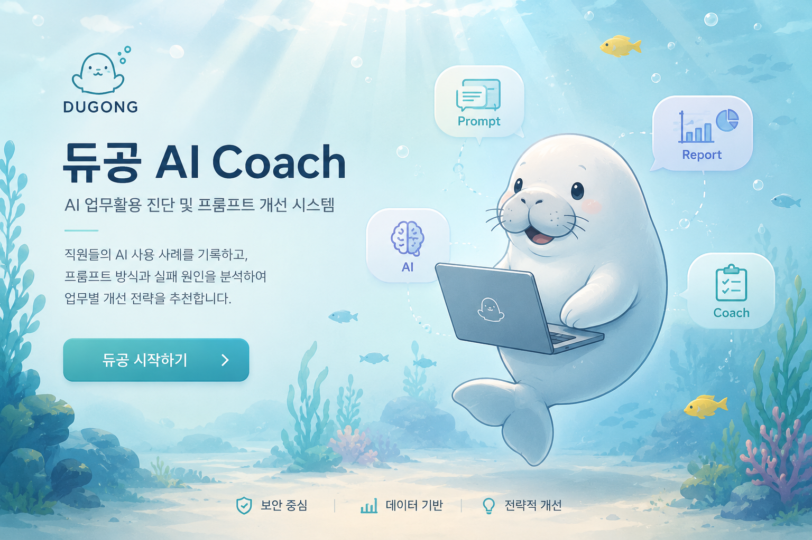

로컬 우선 보호
원문 프롬프트, 대화 이력, 결과 텍스트와 직접 식별 정보는 중앙 익명 통계 전송에서 제외합니다.

AI WORK-USAGE DIAGNOSIS SYSTEM
직원의 AI 업무 활용을 진단하고, 프롬프트 개선과 팀 단위의 학습 준비를 사람 검토 기준으로 다루는 JavaFX 데스크톱 시스템입니다.
PRODUCT INTENT
듀공은 ChatGPT, Claude, Gemini, Copilot 같은 AI 도구의 업무 사용 사례를 기록하고, 업무 유형과 목적, 프롬프트 방식, 실패 원인, 보안 위험, 결과 신호를 분석합니다. 분석 결과는 개인 평가를 위한 점수가 아니라, 더 나은 프롬프트와 교육 주제를 제안하기 위한 운영 근거로 남깁니다.
원문 프롬프트, 대화 이력, 결과 텍스트와 직접 식별 정보는 중앙 익명 통계 전송에서 제외합니다.
JavaFX는 입력과 표시를 맡고, 분석, 보안 판단, 저장, 내보내기와 감사는 Python 계약 경계에서 처리합니다.
AI가 제안한 값은 학습 라벨이 아니며, 사용자 확인, 사용자 수정, 사람 검토 값만 확정 라벨 후보가 됩니다.
PRODUCT EVIDENCE
활성 제품 UI는 JavaFX 데스크톱 앱입니다. 시작 화면은 사용자가 사례를 기록하고, 진단 결과를 확인하며, 개선 방향과 리포트로 이어지는 제품의 진입 흐름을 보여줍니다.
공개 화면은 제품의 시작 경험과 기능 흐름만 보여줍니다. 실제 직원 사례, 프롬프트 원문, 조직명과 개인 식별 정보는 포함하지 않습니다.
OPERATING ARCHITECTURE
DesktopJavaFX 21, JDK 17
CorePython, pipeline, analyzer, recommender
Trustsecurity guard, audit log, label provenance
DeliveryCLI JSON 계약, pytest, CSV/JSONL export
GOVERNED LEARNING
듀공의 데이터 흐름은 분석 편의보다 사용자의 통제권을 우선합니다. 익명 telemetry와 로컬 학습 데이터는 분리하고, 보안 위험 사례는 전문가 검토 조건을 유지합니다.
중앙 telemetry에는 업무 패턴과 지표만 남기고, 원문 텍스트와 직접 식별 정보는 차단 정책으로 분리합니다.
telemetry 정책과 payload guard 테스트로 전송 경계를 검증합니다.
분석 결과는 UI가 직접 계산하지 않으며, Python 서비스와 CLI JSON 계약을 통해 일관된 형태로 표시됩니다.
UI와 분석 코어의 책임을 분리해 회귀 범위를 줄입니다.
확인, 수정, 검토 라벨의 출처와 신뢰도를 보존해 다음 개선 판단에서 근거를 다시 확인할 수 있습니다.
AI 제안 값은 확정 학습 라벨로 승격되지 않습니다.
label source, confidence, redaction, 필수 맥락과 사후 누수 여부를 검사해 CSV와 JSONL을 준비합니다.
rejected rows는 삭제가 아니라 수집 품질을 개선하기 위한 진단 근거입니다.
VERIFICATION
분석, 추천, 파이프라인, DB migration, CLI JSON envelope, 피드백 라벨, telemetry 원문 차단과 데이터 품질 gate를 테스트 범위로 두었습니다. 2026-08-10 로컬 소스 검증에서는 Python 테스트 492건이 통과했습니다.
로컬 테스트
492 2026-08-10 pytest 통과주요 계약
CLI JSON JavaFX와 Python의 안정적 연결보안 경계
Raw-text block 익명 telemetry에서 원문 차단ML READINESS
규칙 기반 진단은 계속 유효한 기준선으로 유지합니다. baseline 모델, 하이퍼파라미터 최적화, 모델 승격은 충분한 사람 확인 라벨, 클래스 균형, 그룹 다양성, 사후 누수 차단, 고위험 사례 검토가 확인된 뒤에만 검토합니다.
AI 업무 사용 사례와 결과 신호를 구조화합니다.
사용자와 검토자의 피드백을 라벨 출처로 남깁니다.
품질 gate와 redaction으로 학습 후보를 제한합니다.
규칙 기반 결과와 모델 후보를 비교할 준비를 합니다.
조건이 충족될 때만 검토 기반의 모델 전환을 논의합니다.
현재 구현진단, 추천, 보안 판단, 피드백, export, audit와 workflow gate를 운영 근거로 유지합니다. PyTorch 실험 준비 모듈은 export, audit, target 검증, 라벨과 클래스, 그룹 다양성, 누수, 고위험 검토, 사람의 명시적 승인을 함께 확인합니다.
PyTorch 경계모든 조건이 통과해도 결과는 shadow experiment only입니다. training_started는 계속 false이며, 이 모듈은 PyTorch를 import하거나 모델을 만들고 학습시키지 않습니다.
의도적으로 보류자동 학습, 자동 승인, 개인 평가, 원문 기반 중앙 수집과 재정 데이터 변경은 범위에 넣지 않습니다. PyTorch 실험 사례 보기 또는 준비 코드 보기
PYTORCH SHADOW CASE
첫 대상은 task_type입니다. 이 사례는 정답을 자동으로 확정하는 모델이 아니라, 사람 확인 라벨을 기준으로 규칙 기반 진단과 비교할
shadow experiment의 준비 계약입니다. 현재는 학습을 시작하지 않았고, 모든 결과는 검토자 비교를 위한 근거로만 남습니다.
사용자 확인, 사용자 수정, 사람 검토 라벨만 후보가 됩니다. 원문 프롬프트와 대화 이력은 입력에서 제외합니다.
export, audit, target 품질, 라벨과 클래스, 그룹 다양성, 누수, 고위험 검토를 모두 통과해야 합니다.
별도 frozen dataset과 manifest가 승인된 뒤에만 분류 후보를 비교합니다. 제품 동작을 바꾸지 않습니다.
검토자가 오류와 그룹별 결과를 확인한 뒤에만 다음 실험 또는 보류를 결정합니다.
task_type